같은 도구, 같은 공정으로 채널들을 굴렸습니다.
6월 한 달에만, 6개 채널에서 수익이 났습니다.
그 과정을 실데이터로 전부 공개합니다
오늘의 목표
같은 도구
같은 공정
뭐가 뜨는지
왜 갈리는지
더 정답에
가까운 방법
감이 아니라, 데이터로 말씀드립니다
채널 6개를 운영하는데,
전부 수익창출이 났습니다.
하지만 수익 / 조회수는
채널마다 다르더라고요.
같은 도구, 같은 공정으로
만든 채널들인데요.
그 차이를 오늘 다 보여드리겠습니다.
| 채널 | 6월 조회수 | 구독자 증가 | 예상수익 |
|---|---|---|---|
| 🟢 채널 A | 138.9만 | +1.1만 | ₩580만 |
| 🔵 채널 B | 147.5만 | +7.5천 | ₩520만 |
| 🟠 채널 C | 119.9만 | +4.1천 | ₩366만 |
| 🟣 채널 D | 31.6만 | +1.2천 | ₩85만 |
| 🟡 채널 E | 18.5만 | +563 | ₩53만 |
| 🔴 채널 F | 17.2만 | +454 | ₩40만 |
합계 조회수 약 473만 · 구독자 순증 약 +2.5만 · 최고 수익 영상 하나가 ₩397만 (97만뷰)
Chapter 1
성적표 해부 — 숫자의 실체
내 6개 채널 · 롱폼 246개 · 누적 1,425만뷰 전수분석
| 채널 | 구독자 | 롱폼 | 영상당 중앙값 | 상위 3개 비중 | 6월 수익 |
|---|---|---|---|---|---|
| 🟢 A | 2.3만 | 43개 | 2,200 | 77% | ₩580만 |
| 🔵 B | 2.9만 | 53개 | 7,200 | 66% | ₩520만 |
| 🟠 C | 2.3만 | 88개 | 4,350 | 50% | ₩366만 |
| 🟣 D | 4,610 | 30개 | 960 | 74% | ₩85만 |
| 🟡 E | 1.0만 | 22개 | 1,000 | 78% | ₩53만 |
| 🔴 F | 2,830 | 10개 | 1,575 | 99% | ₩40만 |
영상당 중앙값이 7.5배 차이 (B 7,200 vs D 960) — 같은 공정에서 나는 이 격차가 '채널빨'의 실체입니다.
상위 3개가 절반에서 전부를 법니다 — 대박 하나가 채널을 먹여살리는 구조. 그래서 '개수'가 무기입니다.
Chapter 2
시장의 답 — 잘 되는 채널은 뭐가 다른가
잘나가는 경제채널 14개 · 최근 2주 롱폼 318개 전수분석
구독자 수는 의미 없습니다.
구독 7,330명 채널이 2주에 157만뷰 — 개설 3주차 신생도 영상당 2.2만.
전부 알고리즘 추천으로 크는 시장 = 신규 진입에 유리한 구조
평균 조회수도 거짓말을 합니다.
평균 6.1만짜리 시장 채널의 중앙값은 9,266 — 대박 몇 개가 만든 착시.
벤치마킹 대상은 중앙값으로 골라야 '따라할 수 있는 채널'이 나옵니다
기복(CV) 최소 수준.
보통 영상이 5만씩 나옴.
안정성 위에 물량을 곱함.
물량이 총량을 만듦.
후킹으로 끌고 와서
시청시간으로 보상받음.
3개 중 1개가 10만+ 히트 — 히트를 운이 아니라 공정(工程)으로 만든 채널이 1위입니다.
물량은 안정성을 못 삽니다.
하루 3개씩 올리는 물량 1·2위 채널들의 중앙값은 5천~8천에 그침.
안정성의 원천은 '소재 축 + 템플릿 고정' — 조회수가 가장 고른 채널은 전부 템플릿 고정 채널
Chapter 3
무엇이 터지나 — 소재는 감정이다
소재의 본질은 정보가 아니라
감정입니다.
시장 히트작 46개 전부에 감정 서사가 있었습니다.
감정 없이 정보만 있는 영상은 — 전부 바닥이었습니다.
몰락(불안)이 내 최강 축 — 전체 중앙값(2,800)의 5.7배. 이 축부터 시리즈화합니다.
소재에도 수급이 있습니다 — 국뽕은 기대값 1위인데 공급 부족, 중국 리스크는 57개가 쏟아져 기대값 반토막.
그래서 제 다음 베팅은 —
국뽕 × '인물+반전'입니다.
시장 기대값 1위인데 공급은 15개뿐.
남들이 중국 레드오션에 몰릴 때, 블루오션을 선점합니다
단, 축 없는 '단발 소재'는
만들지 마세요.
시장에서도 축 없는 영상 107개의 중앙값은 7.3천 — 전 소재 중 최하위.
이것저것 만드는 노동은 0에 수렴합니다 — 축을 정하고 시리즈로 가세요
반대로, 경제 채널에 축구를 올리면?
98뷰 나옵니다.
역사를 올리면 113뷰. 카테고리 밖 13개 영상, 대박 0개.
Chapter 4
어떻게 만드나 — 히트작의 공식
저는 영상 만드는 시간보다
남의 썸네일 보는 시간이 더 깁니다.
지금부터 — 잘나가는 시장 채널들의 실제 썸네일로 보여드립니다
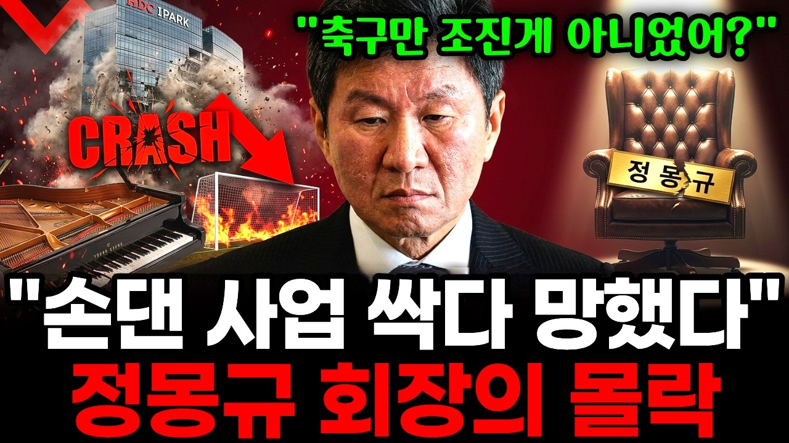
49.1만1줄 흰색 따옴표 인용 + 2줄 노랑·빨강 결론. 소재는 바뀌어도 형식은 완전 고정 — 썸네일만 봐도 이 채널인 걸 압니다.
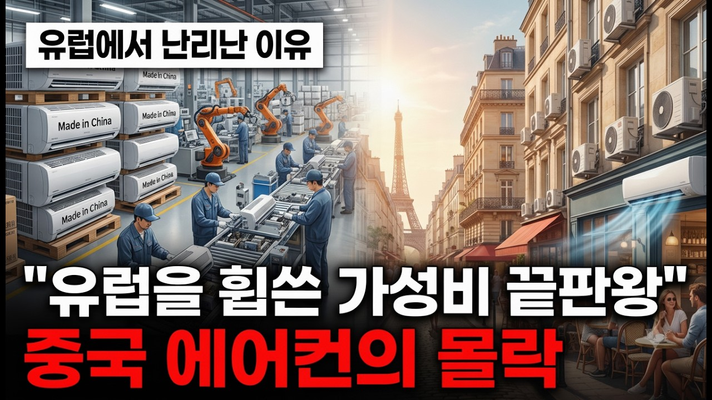
41.4만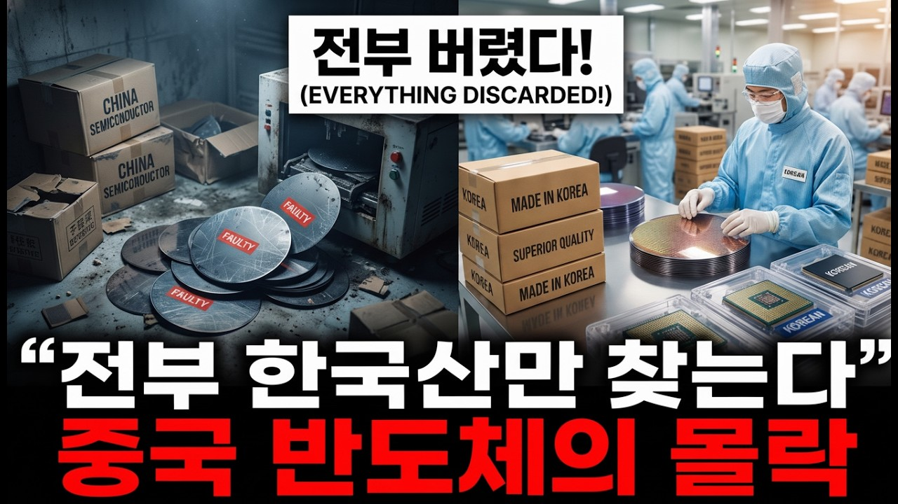
19.2만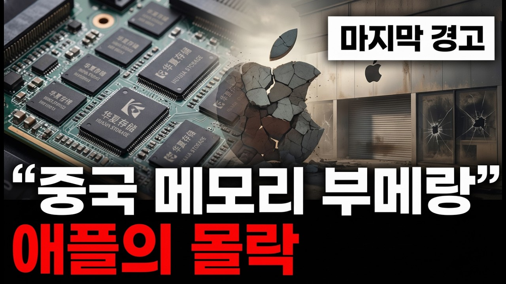
13.8만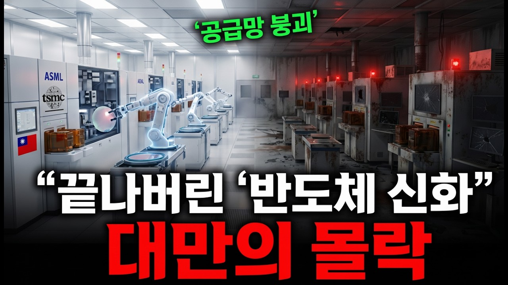
10.5만에어컨 → 반도체 → 애플 → 대만, 대상만 갈아끼우는 몰락 시리즈. 템플릿 고정도가 높을수록 조회수가 고릅니다.
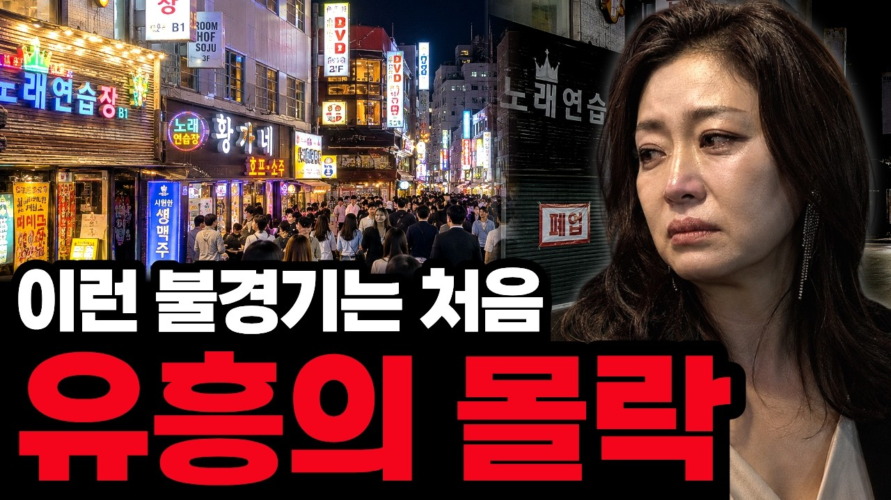
68.3만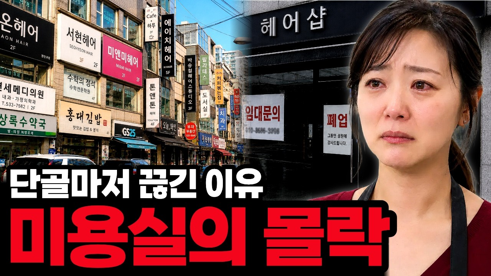
61.6만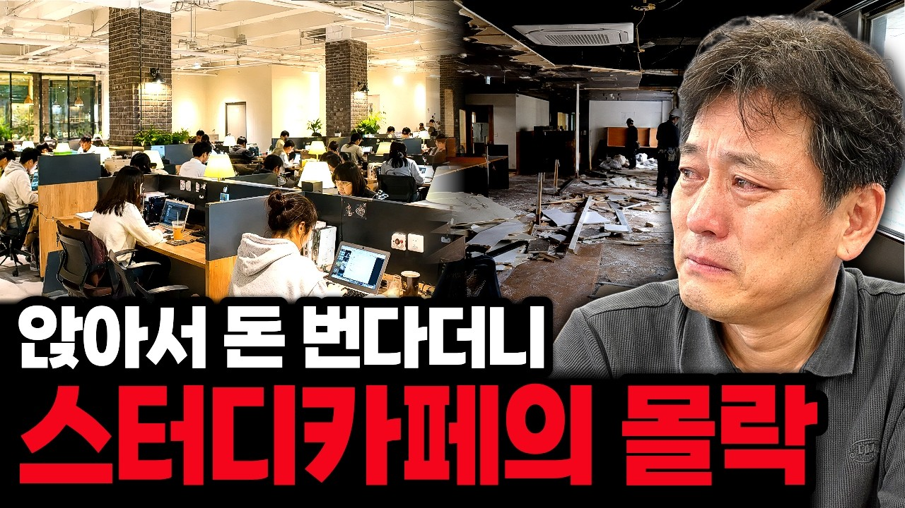
4.7만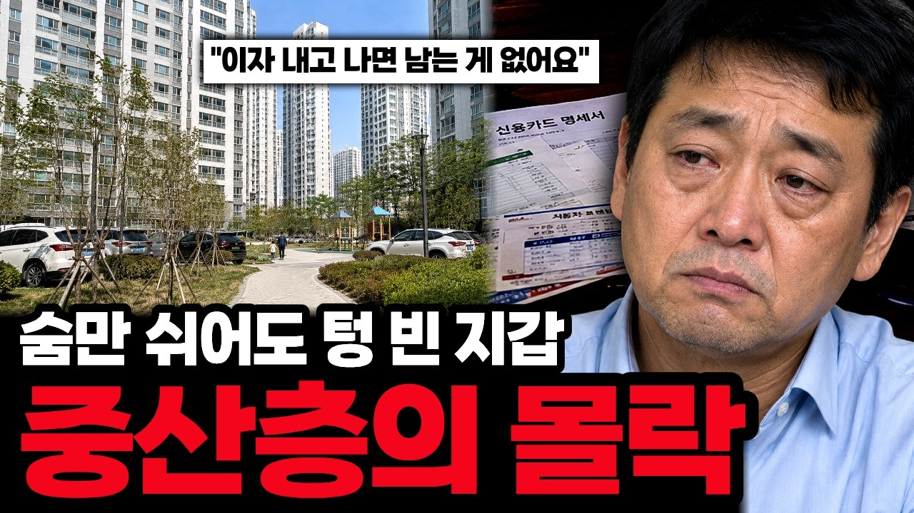
3.8만우는 인물 · 텅 빈 상점가 + "OO의 몰락" 노란 대형 글씨. 자영업 '공감' 소재 × 12분 게릴라 — 저비용 고효율의 정석.
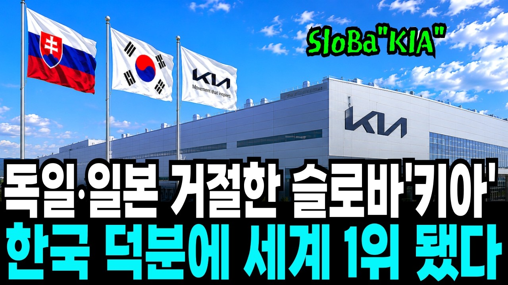
21.2만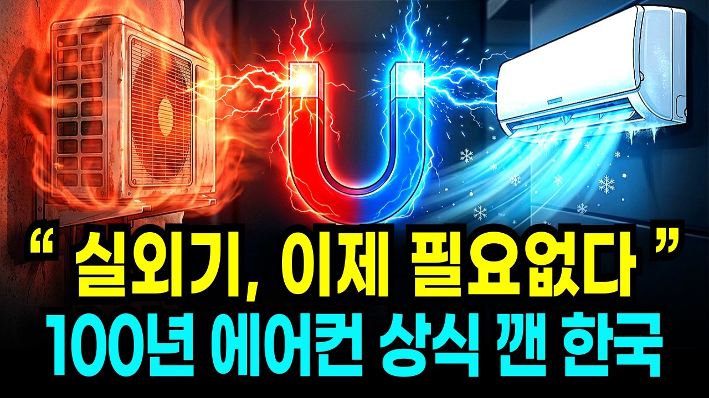
22.7만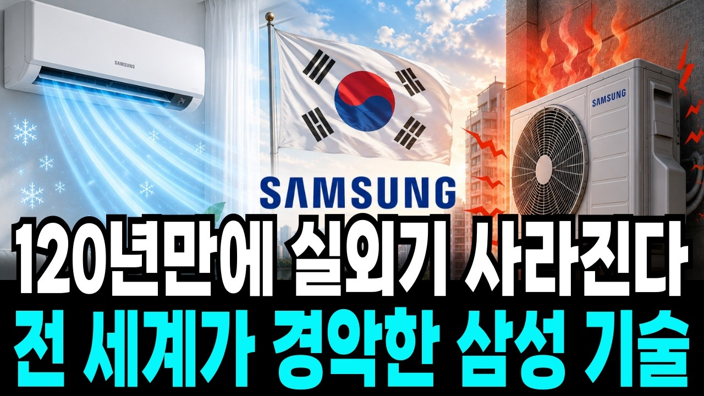
10만+실사 산업 현장 + "독일·일본이 거절한 걸 한국이" 반전 서사. 이 축은 시청층 바닥이 가장 단단합니다 — 기복 최소.
「"육성 인용" + 숫자 + ~의 진짜 이유」
전부 다른 채널인데 같은 공식입니다. 내 영상 296개 중 275개도 따옴표 시작 — 시장 공통 1위 키워드는 '진짜'.
28분+가 12분 미만의 60배. 단, 길이는 원인이 아니라 '서사력의 결과' — 서사 없이 늘리면 역효과입니다.
단, 썸네일 템플릿 돌려쓰기는 금지!
형식은 벤치마킹하되, 통째 재사용은 '허위 콘텐츠' 제재로 이어집니다
Chapter 5
채널 운영 — 채널은 생물이다
채널빨은 존재합니다.
같은 소재 12개 영상 — 67만뷰부터 652뷰까지, 1,000배 차이
영상을 전량 삭제했던 채널 2개는
끝내 살아나지 못했습니다.
수익창출 자격은 남지만, 반응 좋던 채널이 월 53만원짜리가 됐습니다
— 지우지 말고, 비공개로 돌리세요
노출이 죽은 채널을
붙잡고 계속 올리는 것 —
답이 아닙니다.
4월 평균 19만뷰였던 채널이 6월엔 1,400이 됐습니다
죽었다면, 새 채널이 답입니다.
6월에 새로 판 채널은 3주 만에 약 195만뷰, ₩786만
복권을 긁는 게 아니라,
복권 공장을 차리는 겁니다.
단, 물량만으론 안 됩니다 — 축 + 템플릿 고정이
히트를 '더 자주, 더 예측 가능하게' 만듭니다
그리고 —
저만 번 게 아닙니다.
1기 수강생 중에 이미 월 1,000만원 찍은 분들이 있습니다
2기에선 그분들이
직접 강의합니다.
"강사니까 되는 거 아니냐" — 아닙니다.
오늘 말씀드린 원칙, 그대로 따라 한 분들입니다
| 월 | 화 | 수 | 목 | 금 | 토 | 일 |
|---|---|---|---|---|---|---|
| 8/3 | 4 | 5 | 6 | 7정규강의 1주차 | 8 | 9 |
| 10 | 11 | 12 | 13 | 14정규강의 2주차 | 15 | 16 |
| 17 | 18 | 19 | 20 | 21정규강의 3주차 | 22 | 23 |
| 24 | 25우수 수강생 특강 경제 |
26프반 공개피드백 | 27 | 28정규강의 4주차 | 29 | 30 |
| 31 | 9/1우수 수강생 특강 인문학·심리학·과학 |
2프반 공개피드백 | 3 | 4정규강의 5주차 | 5 | 6AI 실전특강 |
| 7 | 8AI 자동화 우수동기 특강 | 9프반 공개피드백 | 10 | 11정규강의 6주차 | 12 | 13AI 실전특강 |
| 14 | 15 | 16프반 공개피드백 | 17 | 18정규강의 7주차 | 19 | 20AI 실전특강 |
| 오늘 들으신 것 | 2기에서 손에 쥐는 것 |
|---|---|
| 무엇이 터지나 — 소재는 감정 | 뜨는 카테고리 조사법 — 정식 커리큘럼 |
| 히트작의 공식 — 썸네일 분석 | 잘 뜨는 채널 벤치마킹 실습 |
| 복권 공장 — 물량 × 템플릿 | 소재→대본→영상 일체화 + 쇼츠 자동화 |
| 정보성 다음은? | 🆕 야담 · 썰 스토리 트랙 신설 |
야담 채널, 지금 테스트 중입니다 — 수익 데이터는 2기 모집글에서 처음 깝니다
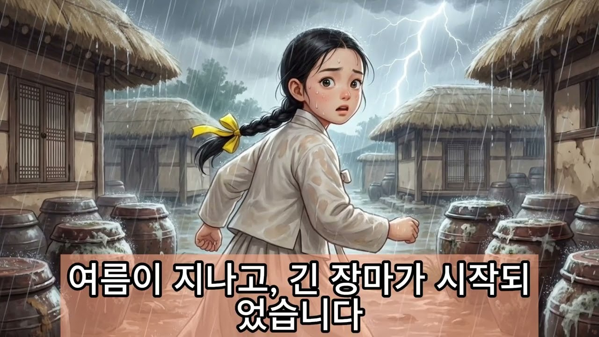
정보성 다음은 '스토리'입니다 — 이 채널의 수익 데이터, 2기 모집글에서 처음 깝니다
오늘 자료는 정모 후기
남겨주신 분들께 드립니다!
카페에 후기 올려주시면 숫자·표 포함 정리본을 보내드려요.
후기에 "2기"까지 남겨주시면 — 야담 수익 공개와 2기 모집 소식도 가장 먼저 드립니다
Q&A
채널 진단 원하시는 분은 말씀해주세요. 같이 봅니다.